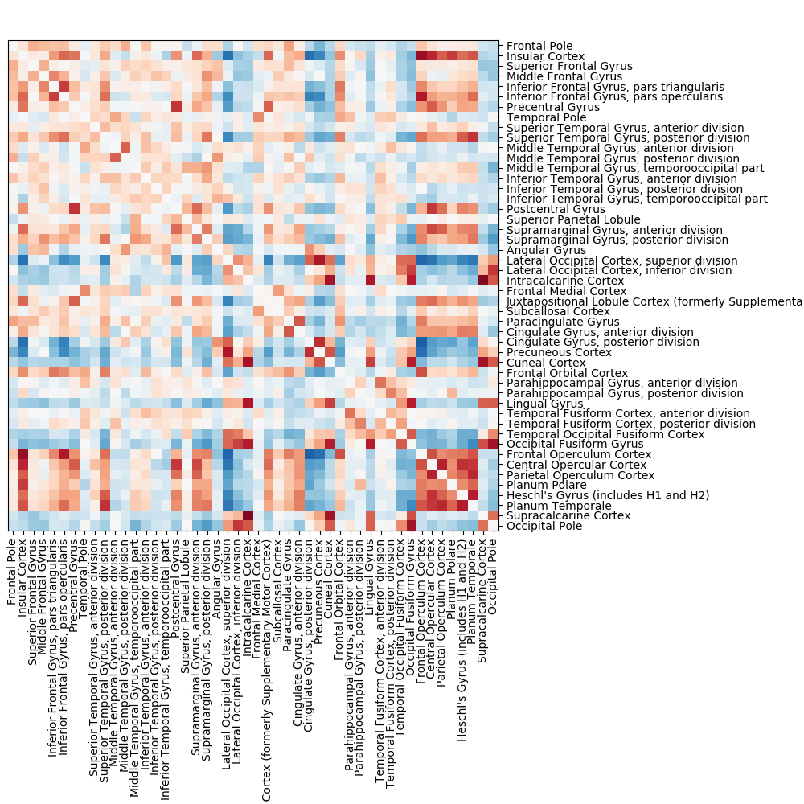
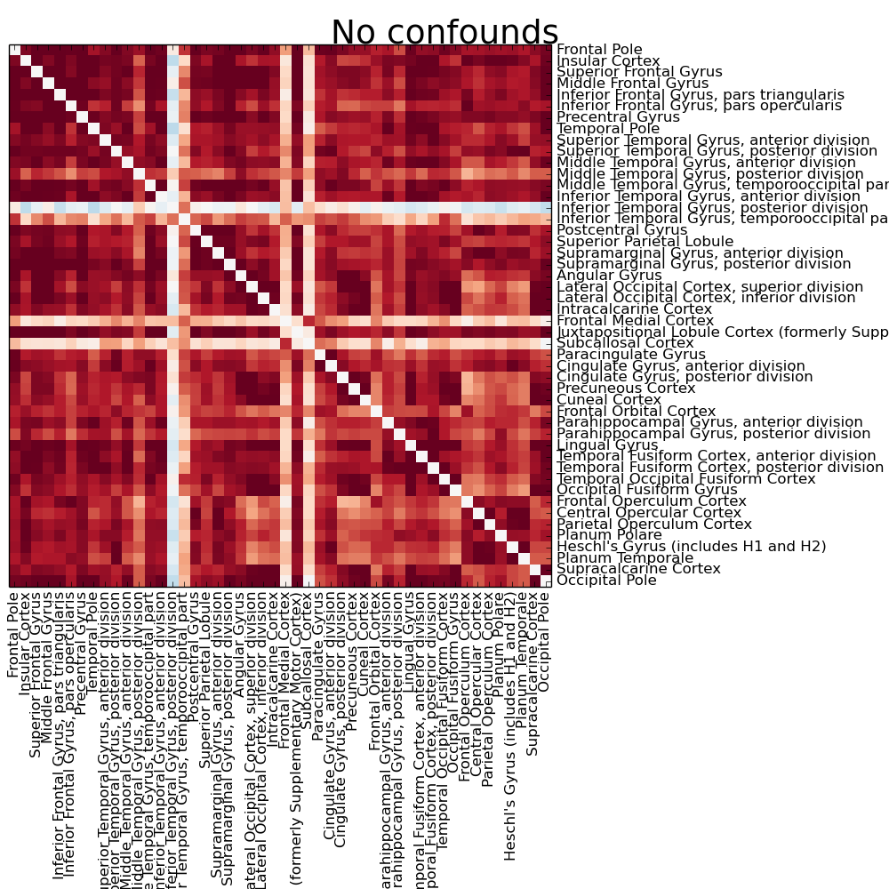
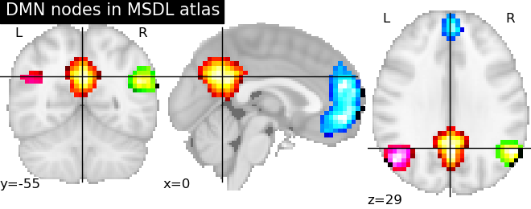
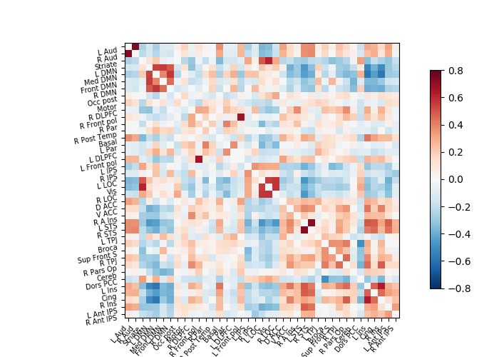

Page summary
A functional connectome is a set of connections representing brain interactions between regions. Here we show how to extract activation time-series to compute functional connectomes.
Contents
References
Regions used to extract the signal can be defined by a “hard” parcellation. For instance, the nilearn.datasets has functions to download atlases forming reference parcellation, e.g., fetch_atlas_craddock_2012, fetch_atlas_harvard_oxford, fetch_atlas_yeo_2011.
For instance to retrieve the Harvard-Oxford cortical parcellation, sampled at 2mm, and with a threshold of a probability of 0.25:
from nilearn import datasets
dataset = datasets.fetch_atlas_harvard_oxford('cort-maxprob-thr25-2mm')
atlas_filename = dataset.maps
labels = dataset.labels
Plotting can then be done as:
from nilearn import plotting
plotting.plot_roi(atlas_filename)
See also
To extract signal on the parcellation, the easiest option is to use the nilearn.input_data.NiftiLabelsMasker. As any “maskers” in nilearn, it is a processing object that is created by specifying all the important parameters, but not the data:
from nilearn.input_data import NiftiLabelsMasker
masker = NiftiLabelsMasker(labels_img=atlas_filename, standardize=True)
The Nifti data can then be turned to time-series by calling the NiftiLabelsMasker fit_transform method, that takes either filenames or NiftiImage objects:
time_series = masker.fit_transform(frmi_files, confounds=csv_file)
Note that confound signals can be specified in the call. Indeed, to obtain time series that capture well the functional interactions between regions, regressing out noise sources is indeed very important [Varoquaux & Craddock 2013].
 Full example
See the following example for a full file running the analysis: Extracting signals from a brain parcellation.
Exercise: computing the correlation matrix of rest fmri
Try using the information above to compute the correlation matrix of the first subject of the ADHD dataset downloaded with nilearn.datasets.fetch_adhd.
Hints:
The definition of regions as by a continuous probability map captures better our imperfect knowledge of boundaries in brain images (notably because of inter-subject registration errors). One example of such an atlas well suited to resting-state data analysis is the MSDL atlas (nilearn.datasets.fetch_atlas_msdl).
Probabilistic atlases are represented as a set of continuous maps, in a 4D nifti image. Visualization the atlas thus requires to visualize each of these maps, which requires accessing them with nilearn.image.index_img (see the corresponding example).
As with extraction of signals on a parcellation, extracting signals from a probabilistic atlas can be done with a “masker” object: the nilearn.input_data.NiftiMapsMasker. It is created by specifying the important parameters, in particular the atlas:
from nilearn.input_data import NiftiMapsMasker
masker = NiftiMapsMasker(maps_img=atlas_filename, standardize=True)
The fit_transform method turns filenames or NiftiImage objects to time series:
time_series = masker.fit_transform(frmi_files, confounds=csv_file)
The procedure is the same as with brain parcellations but using the NiftiMapsMasker, and the same considerations on using confounds regressors apply.
Full example
A full example of extracting signals on a probabilistic: Extracting signals of a probabilistic atlas of rest functional regions.
Exercise: correlation matrix of rest fMRI on probabilistic atlas
Try to compute the correlation matrix of the first subject of the ADHD dataset downloaded with nilearn.datasets.fetch_adhd with the MSDL atlas downloaded via nilearn.datasets.fetch_atlas_msdl.
Hint: The example above has the solution.
A square matrix, such as a correlation matrix, can also be seen as a “graph”: a set of “nodes”, connected by “edges”. When these nodes are brain regions, and the edges capture interactions between them, this graph is a “functional connectome”.
We can display it with the nilearn.plotting.plot_connectome function that take the matrix, and coordinates of the nodes in MNI space. In the case of the MSDL atlas (nilearn.datasets.fetch_atlas_msdl), the CSV file readily comes with MNI coordinates for each region (see for instance example: Extracting signals of a probabilistic atlas of rest functional regions).
For another atlas this information can be computed for each region with the nilearn.plotting.find_xyz_cut_coords function (see example: Group Sparse inverse covariance for multi-subject connectome):
>>> from nilearn import image, plotting
>>> atlas_region_coords = [plotting.find_xyz_cut_coords(img) for img in image.iter_img(atlas_filename)]
As you can see, the correlation matrix gives a very “full” graph: every node is connected to every other one. This is because it also captures indirect connections. In the next section we will see how to focus on only direct connections.